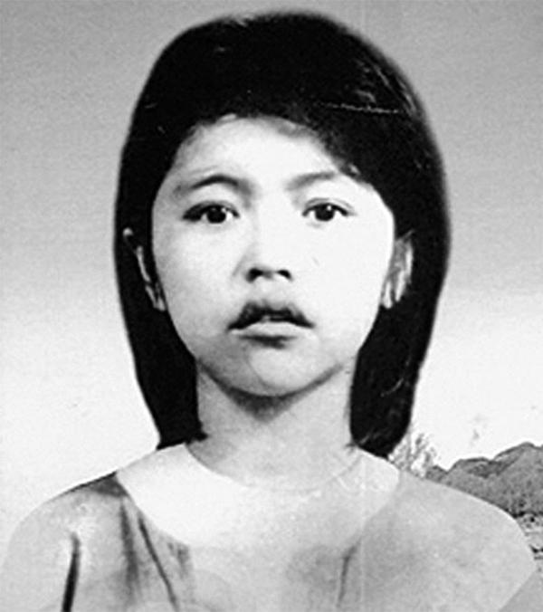
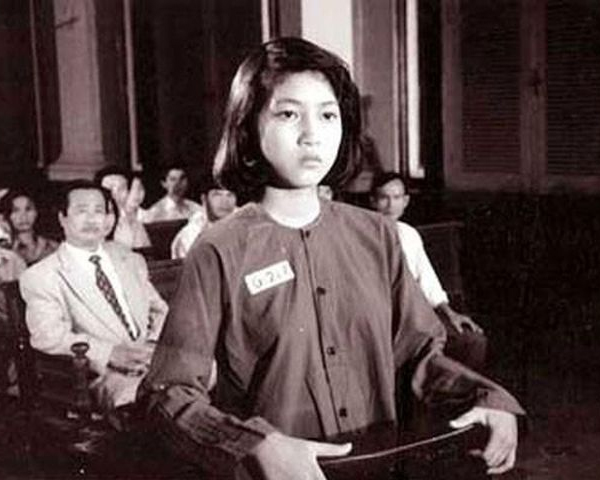
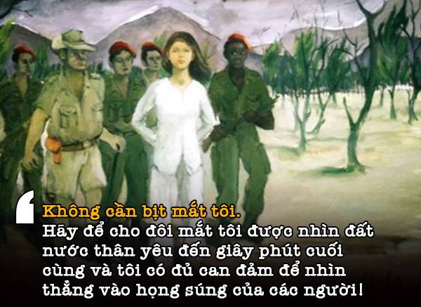

![]()
|
|
|
TẬP THỂ LỚP 8A SẢN PHẨM CUỘC THI SÁNG TẠO TRẺ |
"Người con gái trẻ măng
Giặc đem ra bãi bắn
Đi giữa hai hàng lính
Vẫn ung dung mỉm cười
Ngắt một đoá hoa tươi
Chị cài lên mái tóc
Đầu ngẩng cao bất khuất
Ngay trong phút hy sinh
Bây giờ dưới gốc dương
Chị nằm nghe biển hát..."
- Côn Đảo, 04-1976
Sáng tác: Phan Thị Thanh Nhàn
Võ Thị Sáu là nữ anh hùng cách mạng sinh năm 1933 ở xã Phước Thọ, huyện Đất Đỏ, tỉnh Bà Rịa (nay thuộc xã Phước Long Thọ, huyện Đất Đỏ, tỉnh Bà Rịa - Vũng Tàu). Sinh ra trong thời loạn lạc, chứng kiến đồng bào bị thực dân Pháp giết hại dã man, lòng yêu nước trong Võ Thị Sáu trào dâng và sự căm phẫn đối với thực dân Pháp không ngừng sôi sục.
Võ Thị Sáu gia nhập Việt Minh năm 14 tuổi, khi ấy chị thuộc đội công an xung phong thường xuyên làm nhiệm vụ liên lạc, tiếp tế. Bên cạnh đó Võ Thị Sáu còn tham gia chiến đấu, chị đã gây ra nhiều tổn thất và thương tích cho kẻ địch, dùng lựu đạn tiêu diệt hai tên lính của Pháp. Chị cũng nhiều lần là người phát hiện ra gian tế, tay sai của thực dân Pháp giúp quân ta thoát khỏi mưu mô kẻ thù.
Trong nhiệm vụ phá cuộc mít tinh kỷ niệm Quốc khánh Pháp tháng 7/1948, chị Sáu chủ động xin được trực tiếp đánh trận dù biết vô cùng hiểm nguy. Nửa đêm chị nhận lựu đạn và giấu vào gốc chợ gần khán đài. Đến sáng thực dân Pháp lùa dân vào sân, chị Sáu đợi đến khi xe của tỉnh trưởng tới thì quăng lựu đạn về phía khán đài, uy hiếp giải tán mít tinh. Lúc này hai tổ công an xung phong đồng loạt nổ súng hô to “Việt Minh tiến công” hướng dẫn người dân giải tán, yểm trợ Võ Thị Sáu rút lui, gây sức ép khiến thực dân Pháp phải huỷ bỏ cuộc mít tinh.
Sau chiến công này, chị Võ Thị Sáu tiếp tục được giao nhiều nhiệm vụ khó hơn, trong đó có nhiệm vụ tiêu diệt tên cai tổng Tòng. Lợi dụng đám đông đi làm căn cước, tháng 11/1948 chị Võ Thị Sáu trà trộn vào dòng người rồi đợi thời cơ ném lựu đạn vào nơi làm việc của cai tổng Tòng khiến hắn bị thương nặng nhưng không chết. Vụ việc này chưa đạt kết quả như mong đợi nhưng đã làm lính đồn một phen hoảng sợ không dám truy vết Việt Minh tới cùng như trước nữa.
Đến tháng 2/1950, trong lần thực hiện nhiệm vụ ném lựu đạn tiêu diệt hai chỉ điểm viên của Pháp là Cả Suốt và Cả Đay thì không may bị bắt. Chị Võ Thị Sáu bị giam ở nhà tù Đất Đỏ, suốt một tháng ròng bị tra tấn dã mang, người con gái trẻ vẫn bất khuất, hiên ngang, không một chữ phản bội đồng bào. Sau cùng thực dân Pháp phải đưa chị về khám Chí Hòa tiếp tục tra khảo.
Tại khám Chí Hoà chị Võ Thị Sáu tiếp tục làm liên lạc cho các đồng chí trong khám và phối hợp cùng chị em trong trại đấu tranh đòi cải thiện cuộc sống nhà tù. Trước sự vùng dậy mạnh mẽ này, thực dân Pháp mở phiên tòa kết án tử hình Võ Thị Sáu và đưa chị cùng một số người tù cách mạng ra nhà tù Côn Đảo.
Đứng trước toà, Võ Thị Sáu khi ấy 17 tuổi lớn giọng đanh thép: “Yêu nước, chống bọn thực dân xâm lược không phải là tội”. Đến khi tòa kết án tử hình nữ chiến sĩ trẻ, chị vẫn hô to không hề khoan nhượng: “Đả đảo thực dân Pháp!”, “Kháng chiến nhất định thắng lợi!”.
Ngày 23/1/1952, khoảng 4 giờ sáng, bầu trời xám xịt, từng cơn sóng giận dữ xô bờ, từ các trại giam tiếng hô thất thanh vang vọng: “Phản đối xử bắn Võ Thị Sáu. Phản đối! Phản đối! Đả đảo thực dân Pháp”
Trước giờ hành hình viên cha đạo muốn làm lễ rửa tội cho Võ Thị Sáu nhưng chị từ chối và một lần nữa khẳng định: “Tôi không có tội. Chỉ có kẻ sắp hành hình tôi đây mới có tội”.
Võ Thị Sáu bị dẫn ra pháp trường ở Hàng Dương, Côn Đảo, đối diện với cái chết chị vẫn hiên ngang, nhất quyết không quỳ và phản đối bịt mắt: “Không cần bịt mắt tôi. Hãy để cho đôi mắt tôi được nhìn đất nước thân yêu đến giây phút cuối cùng và tôi có đủ can đảm để nhìn thẳng vào họng súng của các người!”
Sau đó chị Sáu tiếp tục hiên ngang, mắt sáng như sao nhìn thẳng vào bọn lính sắp bắn mình và hát vang bài hát “Chiến sĩ Việt Nam”, “Lên đàng”… Tên lính đứng cách chị Sáu 15 mét, bắn chị không chết, đôi mắt chị vẫn nhìn thẳng vào chúng khiến chúng khiếp sợ không dám bắn nữa. Tên chúa đảo hò hét kêu bắn tiếp, tiếng súng nổ vang rền, bọn chúng bắn đến khi chị Sáu gục xuống, đôi mắt chị khi ấy vẫn mở to sáng ngời.
Ngày 2/8/1993, đồng chí Võ Thị Sáu đã được truy tặng danh hiệu Anh hùng lực lượng vũ trang nhân dân.
- Yêu nước chống bọn thực dân xâm lược không phải là tội.
- Tao còn mấy thùng rác ở khám Chí Hòa, tụi bây vô mà tịch thu.
- Tôi không có tội. Chỉ có kẻ sắp hành hình tôi đây mới là có tội.
- Tôi chỉ ân hận là chưa tiêu diệt hết bọn thực dân cướp nước và lũ tay sai bán nước.
- Đả đảo thực dân Pháp! Kháng chiến nhất định thắng lợi!
- Đả đảo bè lũ thực dân Pháp. Việt Nam độc lập muôn năm. Hồ Chủ tịch muôn năm!
- Tao chỉ biết đứng, không biết quỳ!
- Không cần bịt mắt tôi. Hãy để cho đôi mắt tôi được nhìn đất nước thân yêu đến giây phút cuối cùng và tôi có đủ can đảm để nhìn thẳng vào họng súng của các người!
